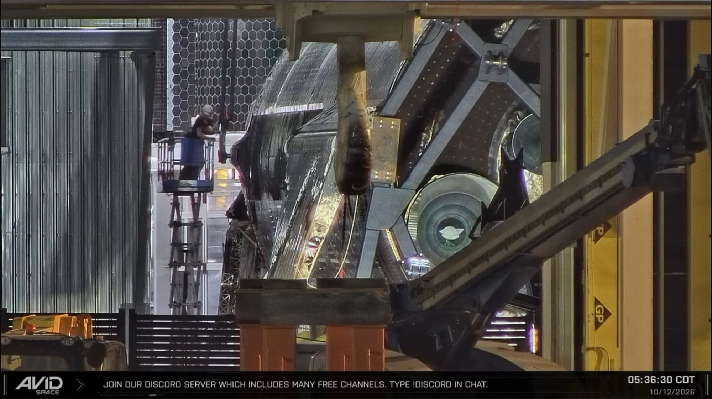
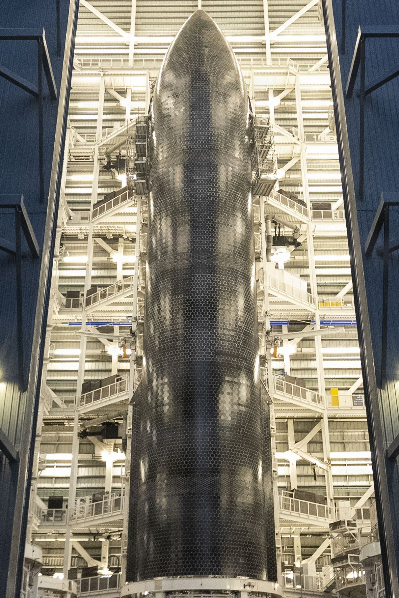
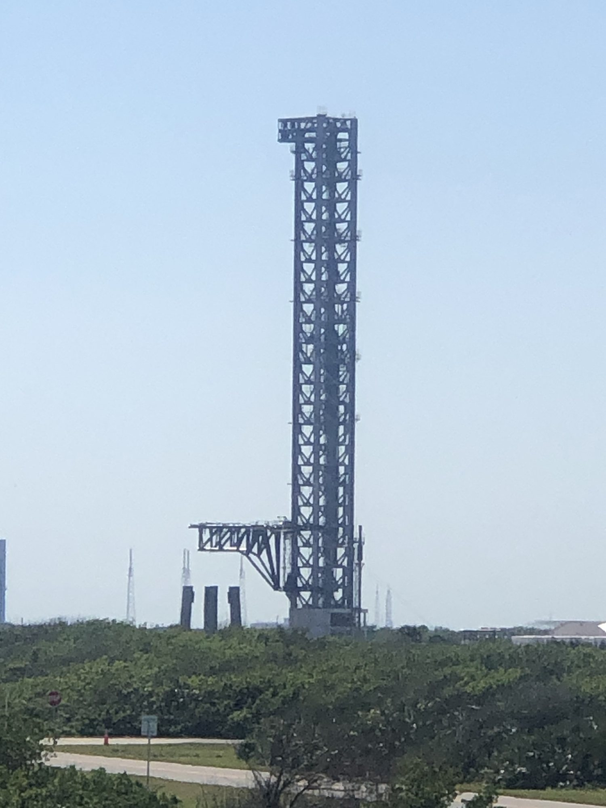

Lunedì 12 ottobre 2026, nel pomeriggio texano, intorno alle 22 italiane, Ship 40 è tornata in piedi. Lo stadio superiore di Starship che il 24 luglio aveva volato nel Flight 13, ammarato nell’Oceano Indiano senza affondare e riportato in Texas dopo settantacinque giorni di mare, è stato agganciato ai carriponte della Megabay 2 e portato lentamente dalla posizione orizzontale a quella verticale. Ora è appoggiato su un anello di trasporto dentro lo stesso edificio da cui era uscito a fine luglio, alla vigilia del volo.
Che cosa è successo a Starbase
L’operazione si è svolta in poco più di ventiquattro ore. Sabato 11 ottobre, a fine giornata, gli osservatori hanno notato una novità sulla poppa di Ship 40: un’attrezzatura di ribaltamento e trasporto fissata alla sezione posteriore, quella che ospita i motori. Era il segnale che lo scafo, rimasto sdraiato sulla culla con cui aveva viaggiato dall’altra parte del mondo, poteva essere rimesso in verticale. Nelle stesse ore la nave semisommergibile Forte, che l’aveva portato fino a Brownsville, lasciava l’area di Starbase.
Nella notte fra l’11 e il 12 ottobre Ship 40 è stata spostata in retromarcia davanti alla Megabay 2 e poi infilata all’interno. In mattinata le squadre hanno collegato i punti di sollevamento dello scafo a un carroponte dell’edificio, un’unità con portata di 420 tonnellate, aiutato da gru di supporto agganciate alla poppa. La rotazione è stata eseguita con grande lentezza. A fine operazione la Ship era in piedi, seduta su un anello di trasporto, con il muso verso il tetto della baia.
Per un veicolo progettato per volare in verticale non sembra un evento. Lo diventa se si pensa a che cosa ha passato questo scafo: un rientro atmosferico completo dallo spazio, un ammaraggio, settimane in balia delle onde, un traino in mare aperto e una traversata oceanica distesa sul ponte di una nave. Rimetterlo in piedi significa sottoporre a carichi diversi una struttura che nessuno aveva mai progettato per tutto questo, e farlo senza danneggiarla ulteriormente.

Dalla banchina alla baia: il percorso di Ship 40
Il 7 ottobre Ship 40 era entrata nel porto di Brownsville sul ponte della Forte, al termine di un viaggio cominciato dopo l’ammaraggio del 24-25 luglio e passato per le acque riparate di Christmas Island, dove a fine agosto gli ingegneri SpaceX avevano raccolto i primi campioni dello scudo termico. Nella notte fra l’8 e il 9 ottobre lo scafo è stato trasferito su strada fino al sito di produzione, sempre in orizzontale, sulla stessa culla usata a bordo. SpaceX l’aveva progettata in modo che i carrelli semoventi modulari potessero sollevarla e farla scendere dalla nave.
Il dettaglio conta più di quanto sembri. Spostare una Ship sdraiata, caricarla e scaricarla da una nave, poi rimetterla in verticale con un’attrezzatura dedicata, sono manovre che SpaceX dovrà ripetere spesso. Gli stadi superiori destinati alla Florida, per esempio, vanno collaudati per intero a Starbase e poi spediti via mare al Kennedy Space Center, che non ha impianti di prova per le Ship. Ship 40, che non tornerà a volare, sta facendo anche da banco di prova per queste operazioni di terra.
| Data | Fase | Che cosa succede |
|---|---|---|
| 24-25 luglio | Flight 13 | Decollo dal Pad 2 di Starbase e ammaraggio morbido nell’Oceano Indiano; lo scafo resta a galla |
| 18-27 agosto | Christmas Island | Traino in acque riparate, campioni dello scudo termico, carico sulla nave Forte |
| 7 ottobre | Brownsville | Arrivo in porto dopo oltre 12.000 miglia nautiche |
| 8-9 ottobre | Su strada | Trasferimento notturno al sito di produzione, in orizzontale sulla culla di bordo |
| 11 ottobre | Preparazione | Attrezzatura di ribaltamento fissata alla poppa; la Forte lascia l’area |
| 12 ottobre | Megabay 2 | Sollevamento in verticale e posa su un anello di trasporto |
Perché in verticale, e che cosa ne sarà
SpaceX non ha spiegato il motivo. La lettura più semplice è pratica: in verticale lo scafo si ispeziona come qualsiasi Starship in costruzione, con le piattaforme di lavoro della baia tutto intorno, l’accesso ai serbatoi e alla zona motori, e la possibilità di esaminare lo scudo termico piastrella per piastrella. È il lavoro che gli osservatori si aspettavano fin dall’arrivo: confrontare lo stato fisico del veicolo con la telemetria del volo, separando i danni del rientro da quelli accumulati in mare.
Un materiale così non era mai esistito. Prima di Ship 40 ogni Starship rientrata dallo spazio era andata distrutta all’ammaraggio. Le immagini di bordo e le riprese dei droni raccontano molto, ma non permettono di misurare lo spessore residuo di una piastrella, lo stato dell’adesivo che la tiene sull’acciaio o la deformazione di una saldatura. Ogni risposta trovata su questo scafo può tradursi in una modifica sulle Ship successive, a cominciare da quelle che dovranno essere catturate dalla torre e fatte volare di nuovo.
Sul destino finale non c’è nulla di ufficiale. È una valutazione di redazione: dopo settimane in acqua salata un riutilizzo in volo appare escluso, e le strade possibili restano lo smontaggio per le analisi o la conservazione come pezzo storico. Nei commenti degli appassionati la domanda più frequente, dopo il sollevamento, è proprio questa.

Una Ship che ha volato accanto a quelle che voleranno
Le foto scattate dentro la baia mostrano un accostamento quasi simbolico. Alle spalle di Ship 40 c’è Ship 43, ancora in fase di completamento: è lo stadio superiore indicato come probabile protagonista del Flight 16, che potrebbe essere il primo volo di Starship dal Launch Complex 39A in Florida. Una Ship tornata dallo spazio e una che deve ancora partire, nello stesso edificio.
Il volo più vicino resta però il Flight 15. Dovrebbe usare Ship 42 e Booster 22. Ship 42 è tornata per la terza volta al sito di prova di Massey’s, dopo la rimozione dei sei motori, per prove con martinetti che simulano la spinta dei motori, un passo in più rispetto al semplice collaudo criogenico. SpaceX non ha spiegato il motivo; l’ipotesi più discussa è una modifica interna legata agli spegnimenti anticipati dei Raptor Vacuum visti nei Flight 12 e 14. Booster 22 è nella Megabay 1 e potrebbe arrivare all’accensione statica nelle prossime settimane.
La data non ufficiale per il Flight 15 è l’8 novembre. Elon Musk, il 10 ottobre, aveva parlato di un decollo «probabilmente un po’ prima del Thanksgiving», che quest’anno cade il 26 novembre, e di un obiettivo che nessuno ha mai raggiunto: catturare la Ship con le braccia della torre. Su questo punto pesa la licenza di volo, oggi scritta per un profilo diverso. Cambiare missione per tentare la cattura dello stadio superiore richiede una modifica che potrebbe non essere immediata.

Nel frattempo in Florida e a McGregor
Lo stesso 12 ottobre, all’alba, SpaceX ha posato la sezione di copertura sulla sommità della torre Starship del Launch Complex 39A, la rampa storica del Kennedy Space Center da cui partirono le missioni Apollo e lo Shuttle. L’operazione è stata ripresa dalle telecamere di NASASpaceflight. È un passo verso il debutto di Starship dalla Florida, oggi stimato non prima del 10 dicembre per il Flight 16. Prima del lancio, il Booster dovrà superare un’accensione statica sulla rampa, che metterà alla prova anche il sistema di raffreddamento ad acqua e il parco serbatoi, e l’intero razzo dovrà completare una prova generale di conto alla rovescia con i propellenti a bordo.
Anche il traffico di motori racconta il ritmo del programma. Nell’arco di ventiquattro ore cinque Raptor 3 sono stati visti transitare dal centro prove di McGregor, in Texas, fra unità in arrivo per i collaudi e unità in partenza verso Starbase. È la parte meno visibile della catena: ogni lancio di Starship ne richiede trentanove, trentatré sul Booster e sei sulla Ship, e ogni motore passa da lì prima di volare.
Che cosa aspettarsi adesso
Su Ship 40 i prossimi segnali saranno indiretti: piattaforme intorno allo scafo, eventuali pannelli o piastrelle rimossi, magari qualche immagine diffusa da SpaceX con i risultati delle analisi. Sul Flight 15 contano invece il ritorno di Ship 42 nella Megabay 2 con i motori reinstallati, l’accensione statica di Booster 22 e qualsiasi modifica alla licenza che indichi un tentativo di cattura della Ship.
Oggi, intanto, l’attenzione si sposta su Cape Canaveral: alle 12:33 ora italiana è previsto il lancio del Dragon cargo CRS-35 verso la Stazione Spaziale Internazionale, la missione della breaking precedente, che passa all’archivio Notizie. Questa pagina mette in primo piano Ship 40, il primo stadio superiore di Starship tornato dallo spazio, di nuovo in piedi nel posto in cui è nato.
Fonti pubbliche e tracce
Ultimo aggiornamento editoriale: 13 ottobre 2026. Nel corpo non si ripete la fonte a ogni frase: le tracce sono raccolte qui. Date di volo e assegnazioni dei veicoli sono stime non ufficiali.
- NASASpaceflight su X, 12 ottobre 2026: Ship 40 in verticale nella Megabay 2.
- Elisar Priel per NASASpaceflight su X, 12 ottobre 2026: aggancio ai carriponte della Megabay 2 e sollevamento in verticale; ritorno nel punto di partenza di luglio.
- Avid Space (LabPadre) su X, 12 ottobre 2026: sollevamento lento con il nuovo dispositivo di ribaltamento, Ship posata su un anello di trasporto.
- Rough Riders Show per NASASpaceflight su X, 13 ottobre 2026: Ship 40 in verticale, Ship 43 alle spalle; foto di copertina di Gage Telesz.
- Blobifi su X, 11 ottobre 2026: attrezzatura di ribaltamento installata sulla poppa; partenza della nave Forte. Post del 12 ottobre: 1.917 ore, circa 80 giorni, dal decollo.
- WAI Media su X, 12 ottobre 2026: carroponte da 420 tonnellate usato per il sollevamento.
- NASASpaceflight, 9 ottobre 2026: trasferimento su strada di Ship 40, Ship 42 di nuovo a Massey’s, Booster 22, Ship 43 e Booster 23, calendario non ufficiale Flight 15 (NET 8 novembre) e Flight 16 da LC-39A (NET 10 dicembre), questione della licenza.
- MattZ per NASASpaceflight su X, 12 ottobre 2026: installazione della copertura in cima alla torre Starship del LC-39A.
- SpaceRhin0 su X, 12 ottobre 2026: cinque Raptor 3 in transito a McGregor in 24 ore.
- Teslarati, 12 ottobre 2026: dichiarazioni di Elon Musk del 10 ottobre su Flight 15 e sulla cattura della Ship.
Fotografie utilizzabili
Due immagini ritraggono l’evento e sono usate con credito e dicitura «uso editoriale non commerciale»: la copertina di Gage Telesz per NASASpaceflight e il fermo immagine della diretta Avid Space. Le altre due sono a licenza libera e d’archivio: Ship 39 nella Megabay 2 (pubblico dominio, governo USA) e la torre del LC-39A nel 2023 (CC0). Dettagli in scheda dei crediti fotografici.
Apri il dossier CRS-35 archiviato · Ship 40 torna a casa (8 ottobre) · Musk su Flight 14 e Flight 15 · Archivio Notizie · Torna a SpaceX